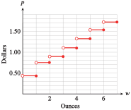

Section 2.6 Domain and Range
¶Subsection Definitions of Domain and Range
In Example 1.75 of Section 1.3, we graphed the function \(f(x) =\sqrt{x + 4}\) and observed that \(f(x)\) is undefined for \(x\)-values less than \(-4\text{.}\) For this function, we must choose \(x\)-values in the interval \([-4, \infty)\text{.}\)

All the points on the graph have \(x\)-coordinates greater than or equal to \(-4\text{,}\) as shown at left. The set of all permissible values of the input variable is called the domain of the function \(f\text{.}\)
We also see that there are no points with negative \(f (x)\)-values on the graph of \(f\text{:}\) All the points have \(f (x)\)-values greater than or equal to zero. The set of all outputs or function values corresponding to the domain is called the range of the function. Thus, the domain of the function \(f (x) =\sqrt{x + 4}\) is the interval \([-4, \infty)\text{,}\) and its range is the interval \([0, \infty)\text{.}\) In general, we make the following definitions.
Domain and Range.
The domain of a function is the set of permissible values for the input variable. The range is the set of function values (that is, values of the output variable) that correspond to the domain values.
Using the notions of domain and range, we restate the definition of a function as follows.
Definition of Function.
A relationship between two variables is a function if each element of the domain is paired with exactly one element of the range.
Notebook 2.95. QuickCheck 1.
Subsection Finding Domain and Range from a Graph
We can identify the domain and range of a function from its graph. The domain is the set of \(x\)-values of all points on the graph, and the range is the set of \(y\)-values.
Example 2.96.
Determine the domain and range of the function \(h\) graphed at right.
For the indicated points, show the domain values and their corresponding range values in the form of ordered pairs.

- All the points on the graph have \(v\)-coordinates between \(1\) and \(10\text{,}\) inclusive, so the domain of the function \(h\) is the interval \([1, 10]\text{.}\) The \(h(v)\)-coordinates have values between \(-2\) and \(7\text{,}\) inclusive, so the range of the function is the interval \([-2, 7]\text{.}\)
- Recall that the points on the graph of a function have coordinates \((v, h(v))\text{.}\) In other words, the coordinates of each point are made up of a domain value and its corresponding range value. Read the coordinates of the indicated points to obtain the ordered pairs \((1, 3)\text{,}\) \((3,-2)\text{,}\) \((6, -1)\text{,}\) \((7, 0)\text{,}\) and \((10, 7)\text{.}\)

The figure at left shows the graph of the function \(h\) in Example 2.96 with the domain values marked on the horizontal axis and the range values marked on the vertical axis. Imagine a rectangle whose length and width are determined by those segments, as shown in the figure. All the points \((v, h(v))\) on the graph of the function lie within this rectangle.
The rectangle described above is a convenient window in the plane for viewing the function. Of course, if the domain or range of the function is an infinite interval, we can never include the whole graph within a viewing rectangle and must be satisfied with studying only the important parts of the graph.
Notebook 2.97. Practice 1.

Sometimes the domain is given as part of the definition of a function.
Example 2.98.
Graph the function \(f (x) = x^2 - 6\) on the domain \(0 \le x \le 4\) and give its range.
The graph is part of a parabola that opens upward. Ww obtain several points on the graph by evaluating the function at convenient \(x\)-values in the domain.
| \(x\) | \(f(x)\) | ||
| \(0\) | \(-6\) | \(\text{since } f(\alert{0})=\alert{0}^2-6=-6\) | |
| \(1\) | \(-5\) | \(\text{since } f(\alert{1})=\alert{1}^2-6=-5\) | |
| \(2\) | \(-2\) | \(\text{since } f(\alert{2})=\alert{2}^2-6=-2\) | |
| \(3\) | \(3\) | \(\text{since } f(\alert{3})=\alert{3}^2-6=3\) | |
| \(4\) | \(10\) | \(\text{since } f(\alert{4})=\alert{4}^2-6=10\) |
The range of the function is the set of all \(f (x)\)-values that appear on the graph. We can see that the lowest point on the graph is \((0, -6)\text{,}\) so the smallest \(f (x)\)-value is \(-6\text{.}\) The highest point on the graph is \((4, 10)\text{,}\) so the largest \(f (x)\)-value is \(10\text{.}\) Thus, the range of the function \(f\) is the interval \([-6, 10]\text{.}\)

Notebook 2.99. Practice 2.

Notebook 2.100. QuickCheck 2.
Not all functions have domains and ranges that are intervals.
Example 2.101.
-
The table gives the postage for sending printed material by first-class mail in 2016. Graph the postage function \(p = g(w)\text{.}\)
Weight in ounces \((w)\) Postage \((p)\) \(0 \lt w \le 1 \) $0.47 \(1 \lt w \le 2 \) $0.68 \(2 \lt w \le 3 \) $0.89 \(3 \lt w \le 4 \) $1.10 \(4 \lt w \le 5 \) $1.31 \(5 \lt w \le 6 \) $1.52 \(6 \lt w \le 7 \) $1.73 - Determine the domain and range of the function.
-
From the table, we see that articles of any weight up to \(1\) ounce require $0.47 postage. This means that for all \(w\)-values greater than \(0\) but less than or equal to \(1\text{,}\) the \(p\)-value is \(0.47\text{.}\) Thus, the graph of \(p = g(w)\) between \(w = 0\) and \(w = 1\) looks like a small piece of the horizontal line \(p = 0.47\text{.}\)
Similarly, for all \(w\)-values greater than \(1\) but less than or equal to \(2\text{,}\) the \(p\)-value is \(0.68\text{,}\) so the graph on this interval looks like a small piece of the line \(p = 0.68\text{.}\) Continue in this way to obtain the graph shown below.
The open circles at the left endpoint of each horizontal segment indicate that that point is not included in the graph; the closed circles are points on the graph. For instance, if \(w = 3\text{,}\) the postage, \(p\text{,}\) is $0.89, not $1.10. Consequently, the point \((3, 0.89)\) is part of the graph of \(g\text{,}\) but the point \((3, 1.10)\) is not.
-
Postage rates are given for all weights greater than \(0\) ounces up to and including \(7\) ounces, so the domain of the function is the half-open interval \((0, 7]\text{.}\) (The domain is an interval because there is a point on the graph for every \(w\)-value from \(0\) to \(7\text{.}\))
The range of the function is not an interval, however, because the possible values for \(p\) do not include all the real numbers between \(0.3\) and \(1.75\text{.}\) The range is the set of discrete values \(0.47\text{,}\) \(0.68\text{,}\) \(0.89\text{,}\) \(1.10\text{,}\) \(1.31\text{,}\) \(1.52\text{,}\) and \(1.73\text{.}\)
Notebook 2.102. QuickCheck 3.
Notebook 2.103. Practice 3.
In Notebook 2.73 of Section 2.4, you wrote a formula for residential water bills, \(B(w)\text{,}\) in Arid, New Mexico:
Notebook 2.104. Pause and Reflect.
Subsection Finding the Domain from a Formula
If the domain of a function is not given as part of its definition, we assume that the domain is as large as possible. We include in the domain all \(x\)-values that make sense when substituted into the function's formula.
For example, the domain of the function \(f (x) =\sqrt{9 - x^2}\) is the interval \([-3, 3]\text{,}\) because \(x\)-values less than \(-3\) or greater than \(3\) result in square roots of negative numbers. You may recognize the graph of \(f\) as the upper half of the circle \(x^2 + y^2 = 9\text{,}\) as shown at right.

Notebook 2.105. QuickCheck 4.
Example 2.106.
Find the domain of the function \(~~g(x) = \dfrac{1}{x-3}\)
We must omit any \(x\)-values that do not make sense in the function's formula. Because division by zero is undefined, we cannot allow the denominator of \(\dfrac{1}{x-3}\) to be zero. Since \(x - 3 = 0\) when \(x = 3\text{,}\) we exclude \(x = 3\) from the domain of \(g\text{.}\) Thus, the domain of \(g\) is the set of all real numbers except \(3\text{.}\)
Notebook 2.107. Practice 4.

For the functions we have studied so far, there are only two operations we must avoid when finding the domain: division by zero and taking the square root of a negative number.
Many common functions have as their domain the entire set of real numbers. In particular, a linear function \(~f(x) = b + mx~\) can be evaluated at any real number value of \(x\text{,}\) so its domain is the set of all real numbers. This set is represented in interval notation as \((-\infty, \infty)\text{.}\)
The range of the linear function \(~f(x) = b + mx~\) (if \(m \ne 0\)) is also the set of all real numbers, because the graph continues infinitely at both ends, as shown in figure (a). If \(m = 0\text{,}\) then \(~f(x) = b~\text{,}\) and the graph of \(f\) is a horizontal line. In this case, the range consists of a single number, \(b\text{.}\)

Notebook 2.108. QuickCheck 5.
Notebook 2.109. Pause and Reflect.
Subsection Restricting the Domain
In many applications, we may restrict the domain of a function to suit the situation at hand.
Example 2.110.
The function \(~h = f(t) = 1454 - 16t^2~\) gives the height of an algebra book dropped from the top of the Sears Tower as a function of time. Give a suitable domain for this application, and the corresponding range.
You can use the window
to obtain the graph shown at right.
Because \(t\) represents the time in seconds after the book was dropped, only positive \(t\)-values make sense for the problem. The book stops falling when it hits the ground, at \(h = 0\text{.}\) You can verify that this happens at approximately \(t = 9.5\) seconds. Thus, only \(t\)-values between \(0\) and \(9.5\) are realistic for this application, so we restrict the domain of the function \(f\) to the interval \([0, 9.5]\text{.}\)
During that time period, the height, \(h\text{,}\) of the book decreases from \(1454\) feet to \(0\) feet. The range of the function on the domain \([0, 9.5]\) is \([0, 1454]\text{.}\) The graph is shown at right.
Notebook 2.111. Practice 5.
(See Appendix D for the formula for the volume of a box.)
Subsection Section Summary
¶Subsubsection Vocabulary
Look up the definitions of new terms in the Glossary.
Domain
Range
Restricted domain
Subsubsection CONCEPTS
The domain of a function is the set of permissible values for the input variable.
The range is the set of function values (that is, values of the output variable) that correspond to the domain values.
A relationship between two variables is a function if each element of the domain is paired with only one element of the range.
We can identify the domain and range of a function from its graph. The domain is the set of \(x\)-values of all points on the graph, and the range is the set of \(y\)-values.
If the domain of a function is not given as part of its definition, we assume that the domain is as large as possible.
In applications, we may restrict the domain and range of a function to suit the situation at hand.
Subsubsection STUDY QUESTIONS
Explain how to find the domain and range of a function from its graph.
What is the domain of the function \(f (x) = 4\text{?}\) What is its range?
Which of the eight basic functions are increasing on their entire domain? Which are decreasing on their entire domain?
Which of the eight basic functions are concave up on their entire domain? Which are concave down on their entire domain?
Which of the eight basic functions can be evaluated at any real number? Which can take on any real number as a function value?
Which of the eight basic functions can be graphed in one piece, without lifting the pencil from the paper?
Subsubsection SKILLS
Practice each skill in the Homework problems listed.
Find the domain and range of a function from its graph: #1–16
Restrict the domain of a function to suit an application: #17–24
Find the domain of a function from its algebraic formula: #25–30
Find the corresponding domain value for a given range value: #31–38
Find the range of a function on a given domain: #39–50
Exercises Homework 2.6
¶For Problems 1-8, find the domain and range of the function from its graph.
1.

2.

3.

4.

5.

6.

7.

8.

For Problems 9–2, state the domain and range of the basic function.
9.
\(f(x)=x^3\)
\(g(x)=x^2\)
10.
\(F(x)=\abs{x} \)
\(G(x)=x\)
11.
\(H(x)=\dfrac{1}{x^2} \)
\(M(x)=\dfrac{1}{x} \)
12.
\(p(x)=\sqrt[3]{x} \)
\(q(x)=\sqrt{x} \)
13.
The graph shows the elevation of the Los Angeles Marathon course as a function of the distance into the race, \(a = f (t)\text{.}\) Estimate the domain and range of the function. (Source: Los Angeles Times)
14.
The graph shows the federal debt as a percentage of the gross domestic product, as a function of time, \(D = f (t)\text{.}\) Estimate the domain and range of the function. (Source: Office of Management and Budget)

15.
The graph shows the average air temperature as a function of altitude, \(T = f (h)\text{.}\) Estimate the domain and range of the function. (Source: Ahrens, 1998)

16.
The graph shows the speed of sound in the ocean as a function of depth, \(S = f (d)\text{.}\) Estimate the domain and range of the function. (Source: Scientific American)

17.
Clinton purchases $\(6000\) of photographic equipment to set up his studio. He estimates a salvage value of $\(500\) for the equipment in \(10\) years, and for tax purposes he uses straight-line depreciation.
Write a formula for the value of the equipment, \(V(t)\text{,}\) after \(t\) years.
State the domain and range of the function \(V(t)\text{.}\)
18.
Leslie plans to invest some money in two CD accounts. The first account pays \(3.6\%\) interest per year, and the second account pays \(2.8\%\) interest per year. Leslie would like to earn $\(500\) per year on her investment.
Write a linear equation in general form that relates \(x\text{,}\) the amount Leslie invests at \(3.4\%\text{,}\) and \(y\text{,}\) the amount she invests at \(2.8\%\text{.}\)
Use your equation from part (a) to write \(y\) as a function of \(x\text{,}\) \(y = f (x)\text{.}\)
Find the domain and range of \(f\text{.}\)
19.
The height of a golfball, in feet, \(t\) seconds after being hit is given by the function \(h = f(t)=-16(t-2)^2 + 64\text{.}\)
Graph the function.
State the domain and range of the function and explain what they tell us about the golfball.
20.
Gameworld is marketing a new boardgame called Synaps. If Gameworld charges \(p\) dollars for the game, their revenue is given by the function \(R = f(p) = -50(p-10)^2+5000\text{.}\)
Graph the function.
State the domain and range of the function and explain what they tell us about the revenue.
21.
In New York City, taxi cabs charge $2.50 for distances up to \(\dfrac{1}{3} \) mile, plus $0.40 for each additional \(\dfrac{1}{5} \) mile or portion thereof. (Source: www.visitnyc.com)
Sketch a graph of \(F(d)\text{,}\) which gives taxi fare as a function of distance traveled, on the domain \(0\lt d \lt 1\text{.}\)
State the range of \(F(d)\) on that domain.
How much will it cost Renee to travel by taxi from Columbia University to Rockefeller Center, a distance of 5.7 miles?
22.
If you order from Coldwater Creek, the shipping charges are given by the following table.
| Purchase amount |
Shipping charge |
| Up to $\(25\) | $\(5.95\) |
| $\(25.01\) to $\(50\) | $\(7.95\) |
| $\(50.01\) to $\(75\) | $\(9.95\) |
| $\(75.01\) to 4\(100\) | $\(10.95\) |
State the domain and range of \(S(x)\text{,}\) the shipping charge as a function of the purchase amount, \(x\text{.}\)
23.
The Bopp-Busch Tool and Die Company markets its products to individuals, to contractors, and to wholesale distributors. The company offers three different price structures for its toggle bolts. If you order \(20\) or fewer boxes, the price is $\(2.50\) each. If you order more than \(20\) but no more than \(50\) boxes, the price is $\(2.25\) each. If you order more than \(50\) boxes, the price is $\(2.10\) each. State the domain and range of \(C(x)\text{,}\) the cost of ordering \(x\) boxes of toggle bolts.
24.
The Java Stop uses paper cups at a rate of \(300\) per day. At opening on Tuesday morning Java Stop has on hand \(1200\) paper cups. On Friday mornings Java Stop takes delivery of a week's worth of cups.
Write a piecewise function for the number of cups Java Stop has on hand for one week, starting Tuesday morning.
Graph the function.
State the domain and range of the function.
For Problems 25-30, find the domain of each function algebraically. Then graph the function, and use the graph to help you find the range.
25.
\(f(x)=\dfrac{1}{(x-4)^2} \)
\(h(x)=\dfrac{1}{x^2}-4 \)
26.
\(g(t)=\dfrac{1}{t}+2 \)
\(F(t)=\dfrac{1}{t+2} \)
27.
\(G(v)=v^3+35 \)
\(H(v)=(v+5)^3 \)
28.
\(h(n)=3+(n-1)^2 \)
\(g(n)=3-(n+1)^2 \)
29.
\(T(z)=\sqrt{z-2} \)
\(S(z)=\sqrt{z}-2 \)
30.
\(Q(x)=4-\abs{x} \)
\(P(x)=\abs{4-x} \)
For Problems 31-38, decide whether the given value is in the range of the function. If so, find the domain value(s) that produce each range value.
31.
\(f(x)=6-\abs{2x+4} \)
\(f(x)=8 \)
\(f(x)=-2 \)
32.
\(g(x)=(x-5)^3+1 \)
\(g(x)=0 \)
\(g(x)=-7 \)
33.
\(h(t)=4+2\sqrt[3]{t} \)
\(h(t)=-4 \)
\(h(t)=0 \)
34.
\(F(t)=12+0.5(t-2)^2 \)
\(F(t)=10 \)
\(F(t)=20 \)
35.
\(G(w)=3+\dfrac{2}{w-1} \)
\(G(w)=-1 \)
\(G(w)=3 \)
36.
\(H(n)=\dfrac{4}{(n+2)^2}-5 \)
\(H(n)=-6 \)
\(H(n)=-1 \)
37.
\(Q(h)=2+\sqrt{h+5} \)
\(Q(h)=1 \)
\(Q(h)=5 \)
38.
\(P(q)=8-\sqrt{4-q} \)
\(P(q)=4 \)
\(P(q)=12 \)
For Problems 39–50,
Use a graphing calculator to graph each function on the given domain. Using the
TRACEkey, adjust Ymin and Ymax until you can estimate the range of the function.Verify your answer algebraically by evaluating the function. State the domain and range in interval notation.
39.
\(f (x) = x^2 - 4x \text{;} ~~ -2\le x\le 5\)
40.
\(g(x)=6x-x^2 \text{;} ~~ -1\le x\le 5\)
41.
\(g(t)=-t^2-2t \text{;} ~~ -5\le t\le 3\)
42.
\(f(t)=-t^2-4t \text{;} ~~ -6\le t\le 2\)
43.
\(h(x)=x^3-1 \text{;} ~~ -2\le x\le 2\)
44.
\(q(x)=x^3+4 \text{;} ~~ -3\le x\le 2\)
45.
\(F(t)=\sqrt{8-t} \text{;} ~~ -1\le t\le 8\)
46.
\(G(t)=\sqrt{t+6} \text{;} ~~ -6\le t\le 3\)
47.
\(G(x)=\dfrac{1}{3-x} \text{;} ~~ -1.25\le x\le 2.75\)
48.
\(H(x)=\dfrac{1}{x-1} \text{;} ~~ -3.25\le x\le -1.25\)
49.
\(G(x)=\dfrac{1}{3-x} \text{;} ~~ 3\lt x\le 6\)
50.
\(H(x)=\dfrac{1}{x-1} \text{;} ~~ 1\lt x\le 4\)
51.
Show that the graph of \(y=\sqrt{16-x^2} \) is a semicircle.
State the domain and range of the function.
-
Graph the function in the window
\begin{align*} {\text{Xmin}} \amp = -6 \amp\amp {\text{Xmax}} = 6\\ {\text{Ymin}} \amp = 0 \amp\amp {\text{Ymax}} = 8 \end{align*}In what way is the calculator’s graph misleading?
(Hint: Write the equation in the form \(x^2 + y^2 = r^2\text{.}\) See Algebra Skills Refresher Section A.11 to review circles.)
52.
For what values of \(x\) is the function \(y = \dfrac{2x - 8}{x-2}\) undefined?
Graph the function in the standard window. In what way is the calculator's graph misleading?
-
Graph the function in the window
\begin{align*} {\text{Xmin}} \amp = -9.4 \amp\amp {\text{Xmax}} = 9.4\\ {\text{Ymin}} \amp = -10 \amp\amp {\text{Ymax}} = 10 \end{align*}State the domain and range of the function.
In Problems 53–60, find the domain and range of each transformation of the given function.
53.
\(f(x)=\dfrac{1}{x^2} \)
\(y=f(x-2) \)
\(y=f(x)-2 \)
\(y=f(x-3)-5 \)
54.
\(f(x)=\sqrt{x} \)
\(y=-f(x) \)
\(y=4+f(x) \)
\(y=4-f(x) \)
55.
\(f(x)=x^2 \)
\(y=-2f(x) \)
\(y=6-2f(x) \)
\(y=6-2f(x+3) \)
56.
\(f(x)=\dfrac{1}{x} \)
\(y=3f(x) \)
\(y=3+f(x-1) \)
\(y=3-f(x-1) \)
57.
The domain of \(f\) is \([0, 10]\) and the range is \([-2, 2]\text{.}\)
\(y=f(x-3) \)
\(y=3f(x) \)
\(y=2f(x-5) \)
58.
The domain of \(f\) is \([-4, 4]\) and the range is \([3, 10]\text{.}\)
\(y=f(x)+10 \)
\(y=f(x+10) \)
\(y=f(x-1)+4 \)
59.
The domain of \(f\) is \((0,+\infty)\) and the range is \((0, 1)\text{.}\)
\(y=5f(x) \)
\(y=3f(x+2) \)
\(y=2f(x-3)+2 \)
60.
The domain of \(f\) is \((-1, 1)\) and the range is \((-\infty, 0)\text{.}\)
\(y=f(x+1) \)
\(y=3-f(x+1) \)
\(y=4+2f(x-1) \)
In Problems 61–64, use a graphing calculator to explore some properties of the basic functions.
61.
Graph \(f (x) = x^2\) and \(g(x) = x^3\) on the domain \([0, 1]\) and state the range of each function. On the interval \((0, 1)\text{,}\) which is greater, \(f (x)\) or \(g(x)\text{?}\)
Graph \(f (x) = x^2\) and \(g(x) = x^3\) on the domain \([1, 10]\) and state the range of each function. On the interval \((1, 100)\text{,}\) which is greater, \(f(x)\) or \(g(x)\text{?}\)
62.
Graph \(f (x) =\sqrt{x} \) and \(g(x) =\sqrt[3]{x} \) on the domain \([0, 1]\) and state the range of each function. On the interval \((0, 1)\text{,}\) which is greater, \(f (x)\) or \(g(x)\text{?}\)
Graph \(f (x) = \sqrt{x}\) and \(g(x) = \sqrt[3]{x}\) on the domain \([1, 100]\) and state the range of each function. On the interval \((1, 100)\text{,}\) which is greater, \(f(x)\) or \(g(x)\text{?}\)
63.
Graph \(f (x) =\dfrac{1}{x} \) and \(g(x) = \dfrac{1}{x^2}\) on the domain \([0.01, 1]\) and state the range of each function. On the interval \((0, 1)\text{,}\) which is greater, \(f (x)\) or \(g(x)\text{?}\)
Graph \(f (x) = \dfrac{1}{x}\) and \(g(x) = \dfrac{1}{x^2}\) on the domain \([1, 10]\) and state the range of each function. On the interval \((1, \infty)\text{,}\) which is greater, \(f(x)\) or \(g(x)\text{?}\)
64.
Graph \(F (x) =\abs{x^3} \) in the ZDecimal window. How does the graph compare to the graph of \(y = x^3\text{?}\)
Graph \(G (x) = \abs{\dfrac{1}{x}}\) in the ZDecimal window. How does the graph compare to the graph of \(y = \dfrac{1}{x}\text{?}\)
65.
The number of hours of daylight on the summer solstice is a function of latitude in the northern hemisphere. Give the domain and range of the function.
66.
A semicircular window has a radius of 2 feet. The area of a sector of the window (a pie-shaped wedge) is a function of the angle at the center of the circle. Give the domain and range of this function.